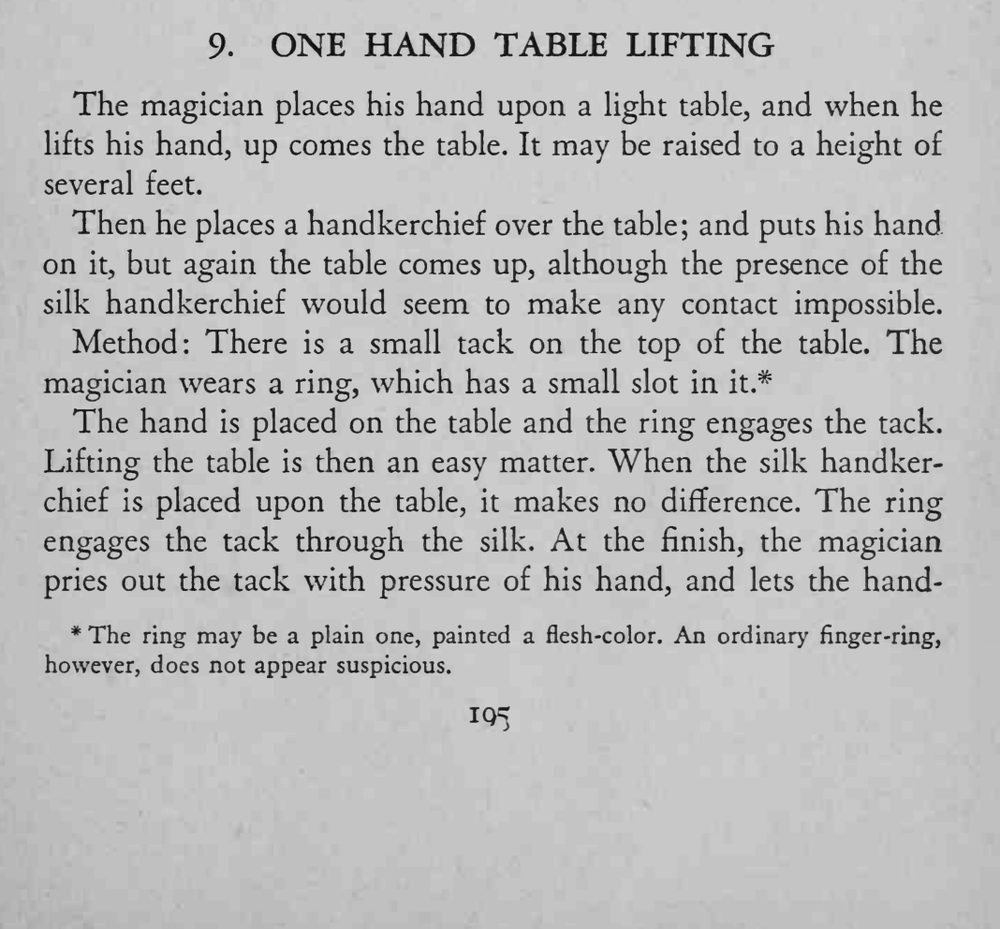
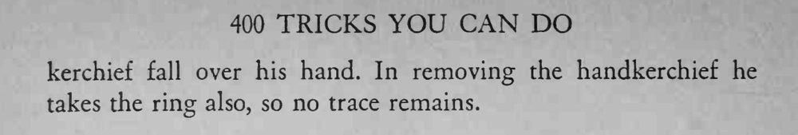

魔术师单手按在桌面上，抬手时整张桌子跟着被提起好几英尺；即便桌面盖着手帕，桌子照样被吸起来。
图钉头与戒指凹槽要刚好吻合，抬桌时手掌要找好受力点。


The magician places his hand upon a light table, and when he lifts his hand, up comes the table. It may be raised to a height of several feet. Then he places a handkerchief over the table; and puts his hand on it, but again the table comes up, although the presence of the silk handkerchief would seem to make any contact impossible. Method: There is a small tack on the top of the table. The magician wears a ring, which has a small slot in it.* The hand is placed on the table and the ring engages the tack. Lifting the table is then an easy matter. When the silk handkerchief is placed upon the table, it makes no difference. The ring engages the tack through the silk. At the finish, the magician pries out the tack with pressure of his hand, and lets the hand- * The ring may be a plain one, painted a flesh-color. An ordinary finger-ring, however, does not appear suspicious. kerchief fall over his hand. In removing the handkerchief he takes the ring also, so no trace remains.